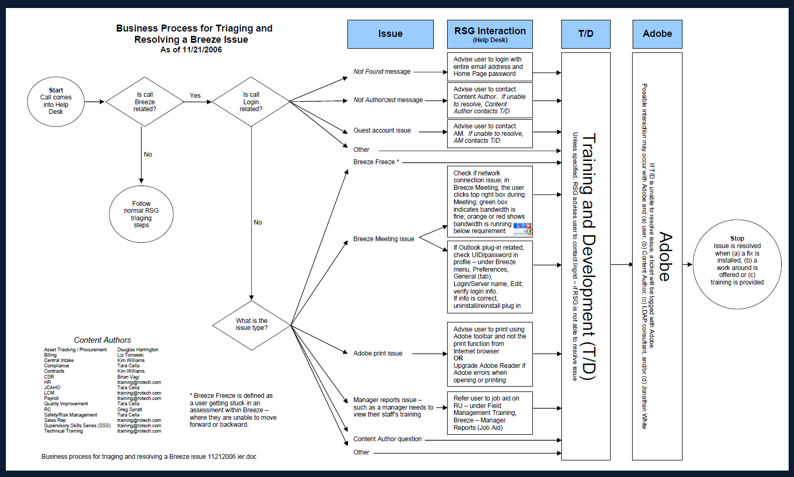

AH™ Approach
AH™ is a sustainable transformation I created... to reflect my experience with strategizing the best approach... to streamline operations, optimize workflows, and align people, processes, and technology.
A
AI and Automation
• Identified opportunities to reduce manual effort and improve access to training and operational information through digital, low-code solutions.
• Evaluated opportunities where automation and centralized digital resources could replace repetitive, paper-based or manually maintained processes.
• Evaluated opportunities where automation and centralized digital resources could replace repetitive, paper-based or manually maintained processes.
B
Business Transformation
• Identified a knowledge-access gap affecting 5,000+ employees who needed to access 66+ proprietary apps; implemented online tool.
• Designed and implemented an electronic applicant flow log for HR VP, reducing errors associated with manually completed docs for affirmative-action requirements.
• Used orientation feedback and performance trends to continually refine baseline/template used across 5 role-based orientations.
• Designed and implemented an electronic applicant flow log for HR VP, reducing errors associated with manually completed docs for affirmative-action requirements.
• Used orientation feedback and performance trends to continually refine baseline/template used across 5 role-based orientations.
C
Change Management
• Analyzed performance trends to pinpoint root cause: national (training), regional (Regional Manager), local (Location Manager), or individual (associate performance).
• Used findings to help leaders distinguish between training gaps, management opportunities, process issues, and individual performance concerns.
• Used findings to help leaders distinguish between training gaps, management opportunities, process issues, and individual performance concerns.
D
Digital Solutions
• Built Rotech University, a low-code training hub serving 5,000+ employees across 500+ locations, eliminating the need for a costly LMS and specialized access.
• Partnered with IT to troubleshoot LMS and design supporting processes.
• Created a digital Area Manager Orientation orientation and centralized equired training and resources.
• Partnered with IT to troubleshoot LMS and design supporting processes.
• Created a digital Area Manager Orientation orientation and centralized equired training and resources.

Click to viewRotech U's workflow for triaging
E
Evaluation and Analytics
• Developed bi-monthly sales-training metrics for the COO, CSO, and Divisional VPs to monitor post-training performance.
• Collaborated with Division Vice Presidents to interpret negative trends and determine whether additional support was needed for sales reps, trainers, or managers.
• Analyzed Help Desk and Call Center trends before and after updates to identify recurring user issues and potential training needs.
• Collaborated with Division Vice Presidents to interpret negative trends and determine whether additional support was needed for sales reps, trainers, or managers.
• Analyzed Help Desk and Call Center trends before and after updates to identify recurring user issues and potential training needs.
F
Facilitation and Feedback
• Interviewed senior leaders and SMEs to identify and capture best practices for manager development.
• Designed and facilitated train-the-trainer programs for both classroom and remote delivery.
• Coached trainers and provided feedback after observing classroom facilitation.
• Designed and facilitated train-the-trainer programs for both classroom and remote delivery.
• Coached trainers and provided feedback after observing classroom facilitation.
G
Governance
• Partnered with Compliance to develop and implement safety, JCAHO, and corporate compliance training.
• Used workers' compensation trends to identify safety-related learning gaps.
• Designed interactive training visuals that required employees to identify and respond to safety issues.
• Used workers' compensation trends to identify safety-related learning gaps.
• Designed interactive training visuals that required employees to identify and respond to safety issues.
H
Human Judgment
• Determined whether performance issues required training, management intervention, process improvement, or individual employee support rather than automatically treating every issue as a training problem.
• Used leadership, SME, employee, and performance feedback to validate whether resources addressed the operational need.
• Used leadership, SME, employee, and performance feedback to validate whether resources addressed the operational need.